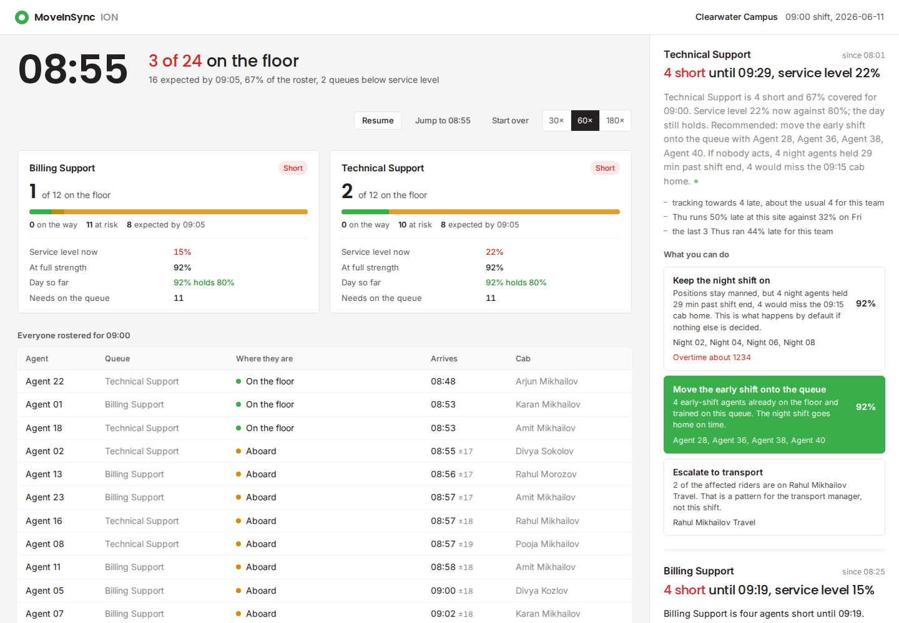

A line manager at a 24/7 support centre has one question at ten to nine: is my floor staffed at nine, and if not, what do I do about it? This is the agent that answers it.
The manager is accountable for the floor. The data that predicts the floor sits in the transport system, in a format built for someone else.
The signal is rich. The insight is missing. The actions are manual.
Senses. Reasons. Acts. Without being asked.
The operative words are minimal human prompting. A dashboard waits to be looked at. A chatbot waits to be asked. Neither of those is what was requested.
| Working, demo-able prototype on the provided dataset | Live board on 2.3M loaded rows. 112 tests. |
| Agentic — senses, reasons, acts | Clock → deterministic reasoning → alert, draft, recorded action. |
| Serves one named persona | Team / line manager. Built only for them. |
| Contextualises against ≥1 reference point | Five: team norm, weekday, recent trend, peer sites, structural slack. |
| Good-to-have: ≥2 solution forms | Five: alerting, narrative, chat, decision support, comms. |
| Good-to-have: handles messy data | Nine documented quirks, each counted at load. |
| Bonus: deployability into the platform | Tenant-scoped, ~15 ms/tick, one seam to swap. |
The first two operate the transport service. The third only lives with it — which is exactly why their tooling is missing.
Owns vendor coordination, escalations, shift planning. Operates the service.
Well served by existing ops dashboards. We surface a vendor pattern to them, as one escalation option.
Owns budget, SLA accountability, leadership reporting. Strategic, monthly cadence.
Our alert output is already forwardable upward without rework — but their own view is out of scope.
Shift-based ops. Needs to know who made it, who was late, and how delays ripple into floor readiness.
| shift_type | planned_drop | actual_drop | minutes past bell | delay_reason |
|---|---|---|---|---|
| 09:00 | 08:55 | 09:20 | +20 | NODELAY |
Transport measures the trip. The cab ran within tolerance, so the trip is clean and the operator's dashboard is green.
The manager lives with the floor. The desk was empty for twenty minutes and the call queue felt every second of it.
70% of arrivals that miss this shift's start are stamped NODELAY.
The product never reads delay_reason.
Not once, anywhere in the codebase.
It derives lateness from the only thing the manager cares about: was a body in a chair when the shift bell rang.
The hard alert trigger is the deterministic "planned drop has passed, no arrival recorded" — which has no false positives, with or without GPS.
Read before a line of product code was written. Each one changed the design.
A team is derivable, not invented. Our 24-person roster and 24-person cover pool are real riders who took this shift on 40+ days.
The plan sits inside its own error bar. Half of all arrivals are late by construction. Escalating daily cannot fix a schedule built that way — so we report it as a standing benchmark.
Against four peer sites. Cedar Ridge runs the same 09:00 shift at under 1%. This is a site problem, not a law of physics — and the peer number is one of the five benchmarks in every alert.
NODELAYThe operator's own metric cannot see this problem. That is the gap the product lives in.
Three rungs. Most tools stop at the first. The brief asks for the third.
True, timely, and useless. Sixty-seven percent of what, costing whom, fixed how?
The manager still has to do all the thinking.
Coverage 67%, against a 75% floor. Tracking toward 4 late — about the usual 4 for this team. Clearwater runs 46% late against 29% across four peer sites.
Now it means something. The manager still has to decide and still has to write the message.
Billing is 4 short until 09:19. Service level 15% now; the day's 80% target still holds. Move Agent 27, 29, 35, 31 — already on the floor. Otherwise 4 night agents are held 19 min and miss the 09:15 cab home. Message drafted. One click sends it.
Effort removed, not relocated.

GET /alerts · 2026-06-11 08:55 · samples/api_alerts_narrated.json
Rider state machine + arrival projection, guarded by the clock.
ComputedErlang C at 8 agents vs 12, plus the day-level rollup.
ComputedTeam norm over 64 days of the same team's history.
ComputedCover search over agents with a recorded arrival before now.
ComputedWhich two facts lead, and the five English sentences.
ModelSame contract, same axis. The manager compares like with like.
Positions stay manned. But 4 night agents are held 29 min past shift end and 4 miss the 09:15 cab home.
People
Night 02, Night 04, Night 06, Night 08
Overtime ≈ 1,234
This is what happens by default if nothing else is decided.
4 early-shift agents already on the floor and trained on this queue. The night shift goes home on time.
People
Agent 27 · Agent 29 · Agent 35 · Agent 31
Hold-over avoided
Each verified by a recorded arrival, and each with zero cover minutes this week — fair as well as fast.
2 of the affected riders are on Rahul Mikhailov Travel. That is a pattern for the transport manager, not this shift.
The agent recognises which problems belong to a different persona and hands them across — rather than asking a line manager to fight a vendor at 08:55.
POST /alerts/{id}/act
Verbatim from samples/api_action.json. No editing step. No "review before sending" dialog to click through.
alert_actions with the pathway, the people, and the minute — an audit trail a director can query.If the model is down, rate-limited, or out of credits, a template fallback still returns a sendable draft for every pathway. The board keeps running. The act path never depends on an LLM being up.
Billing Support, real queue parameters. Same offered load, four fewer agents.
Losing a third of the agents does not cost a third of the service. It costs almost all of it, because occupancy climbs to 96% and the queue stops draining between calls.
Erlang C service level, speed of answer, abandonment, occupancy, schedule adherence,
a day-level rollup, and agents_needed — the last of which is what makes every option
comparable on one number.
Honest about the model: Erlang C assumes Poisson arrivals, exponential handle times, no abandonment, and interchangeable agents. Real WFM tools relax all four. The shape of the answer is what the decision depends on.
Answered in 20 seconds, right now, on Billing Support. Against an 80% target. This looks like a five-alarm fire.
Sixteen intervals, zero breached, 736 calls. The day service level holds the 80% target. The contract is written on the day, not the interval.
Not escalating saves as much money as the cover recommendation does.
A replay clock advances one minute at a time over real trip events. Every read is guarded by now, so nothing downstream can see the future.
Swap the replay for a live event consumer and nothing else in the system changes. That is the whole production seam.
Nine-state rider machine → arrival projection with an uncertainty band → queue headcount → Erlang C and the day rollup → cause → five benchmarks → cover candidates → hold-over cost → alert with priced options.
Zero model calls. Zero per-tick round trips.
A Google ADK agent receives the computed alert and writes the summary and the drafts. The same agent answers the manager's questions from the same computed board.
It cannot invent a number or a name, because the tools only hand it what was computed.
A 150-tick morning across two queues produces 11 narratives, not 300. Everything else is arithmetic. This one decision is most of the cost story on the next-but-one slide.
nowIf the model is down, everything still works. The board ticks, alerts open and resolve, and every pathway still returns a sendable template draft. The LLM is an enhancement layer, never a dependency.
Each file has one job and its own tests. No model call anywhere in this path.
nowNo model, no per-tick DB round trip. Pooled connections and per-shift caching took the full replay from 18.3 s to 2.29 s.
Offline, no spend, ~35 s. Plus 3 live tests behind a marker. Each test names the mistake it guards.
Every one scoped by business unit, office, date and shift through one Scope dependency.
CSV to Postgres via COPY in ~90 s, with nine data quirks handled and each one counted in the load log.
The brief allows any stack. We optimised for depth of reasoning per hour, and for a clean seam into an existing platform.
Scope dependency for tenancyollama/llama3.2| Computed in Python | Written by the model |
|---|---|
| rider state, arrival, headcount | which two of five facts to lead with |
| service level, day rollup, adherence | the five sentences of the summary |
| cause, triggers, option scores | the message to the shift lead |
| who can cover, what it costs | the answer to a manager's question |
The guarantee is structural, not a prompt. The tools return computed objects. There is no tool that returns raw rows, and scope is not settable by the model. It has nothing to hallucinate from.
/usage endpointTwenty percent of the rubric is inference cost, latency and efficiency at scale. So we measured it.
And zero model calls. The expensive part of the product is free.
Across 150 ticks and two queues. A naive per-tick agent would make 300.
Down from 22,600 in the first working version — a 4.5× cut.
Detached from the clock, so the board never freezes waiting for a model.
The reasoning core does no model calls and no per-tick database round trips. Scaling to a thousand shifts scales a 15 ms pure function, which is an ordinary capacity problem with an ordinary answer.
Model spend scales with situations that changed, not with shifts, minutes, or users. A quiet morning at a well-run site costs nothing at all.
That is the difference between an agent you can deploy and a demo you can afford to run once.
Commute is procured on price and switchable. Floor readiness is not.
Transport is procured, benchmarked and re-tendered on price. The moment a client's line managers start their shift on this board, transport becomes operational infrastructure rather than a cost line.
Switching vendor now means retraining every floor manager, not re-running a price comparison.
These contracts are won on service level and lost on hold-over and overtime. They are also the accounts where commute spend is highest and scrutiny is heaviest.
A late cab is their problem only once it becomes an unmanned desk. Nobody currently makes that translation. This does.
Pickup times, drop times, no-shows, vendors — MoveInSync already has all of it. This is a reasoning layer on data already being paid for and already flowing.
No new hardware, no new integrations, no client-side instrumentation. The margin on the second sale is very different from the first.
Today MoveInSync's user is the transport admin. This product gives them a daily relationship with every line manager on every floor — dozens of users per site instead of one.
Daily-active line managers are the strongest renewal signal an enterprise product can have, and the natural route to a per-seat tier.
| Queue | Agents held | Minutes | Missed cabs | Cost |
|---|---|---|---|---|
| Billing Support | 4 | 19 past end | 4 | 799 |
| Technical Support | 4 | 29 past end | 4 | 1,234 |
| One morning, one site | 8 | — | 8 | ≈ 2,033 |
of 09:00 shifts at this site run late. This is most Thursdays, not a freak morning.
The recommended cover comes from agents already paid and already seated. The saving is the avoided overtime, not a trade.
The rubric's first criterion is "does it meaningfully reduce manager effort". Today that manager spends the twenty minutes before every shift assembling a picture from three systems and a phone. Multiply that by every line manager, every floor, every morning. It never appears on a transport invoice — which is exactly why nobody has tried to remove it.
The overtime rate is synthetic and lives in app/config.py.
Substitute the client's real rate and the arithmetic is unchanged. Not synthetic: the shortfall,
the timing, the people, the service level, and the 46%.
One seam. Everything downstream was written to read only what now reveals, so nothing else changes.
app/replay.pyadvances now from live events instead of recorded legsstate → eta → queue → sla → context → remediation → alertsEvery read in the system is already guarded by now. Nothing downstream can see
the future, whether now comes from a replay or from a Kafka offset. The guarantee the
demo needs is the same guarantee production needs.
That was not a lucky accident — it is why the clock exists as its own module with its own tests.
business_unit + office on every request.x-tenant-id header pattern maps onto our Scope dependency one-to-one.business_unit + office. Another tenant is two env vars./health reports process, mode, and whether a model key is present.synthetic on the roster row.app/timeline.py and it is clearly separated.Runs on Render, Vercel, or Cloud Run. The ADK agent deploys with one command.
Every synthetic value is labelled in the code and in the roster, not only on this slide.
NODELAY rate, the 5-vs-13-minute buffer findingroster and queues tablesapp/config.pysynthetic on the roster rowWhy we invented the night shift, specifically. Clearwater's trip log has no outbound legs anywhere near 09:00, so there was no night shift in the data to read. We asserted one because positional handover — a night agent cannot leave until their relief is seated — is what makes a late arrival cost somebody their morning, rather than merely thinning a queue. Remove it and the product is a headcount widget.
Pickup and drop times only. Once a rider is aboard, nothing is observable until they arrive — ~13 minutes of irreducible spread.
Impact is reported as a range, never a false point estimate, and the ± spread shows on every arrival. The hard trigger is the deterministic "planned drop passed, no arrival" — no false positives, with or without GPS.
It is calibrated on ordinary mornings. On genuinely bad ones it under-predicts lateness.
This is asserted in a test, so nobody who inherits the code mistakes a known bias for a bug — and so it fails loudly if someone later "fixes" it in the wrong direction.
Poisson arrivals, exponential handle times, no abandonment, interchangeable agents. Real WFM tools relax all four.
Used it anyway, because the shape of the answer is what the decision depends on — 92% to 15% is the insight, not the third significant figure. It lives in one module, so a client's WFM engine can replace it wholesale.
The most load-bearing synthetic element in the build. See the previous slide.
Labelled everywhere — config, roster row, README, and a slide before anyone asks. Hold-over minutes are not quoted as measured fact until a real logout roster exists.
| Wt. | Criterion | Our evidence |
|---|---|---|
| 35 | Business impact & experience Reduces manager effort; surfaces missed decisions; clarity for the persona; leadership-ready and shareable without rework. |
One persona, served completely. Twenty minutes of morning assembly reduced to one screen and one click. Every alert is a forwardable paragraph with five benchmarks behind it, and the draft message needs no editing. The agent surfaces a decision the manager would otherwise miss entirely — 70% of these late arrivals are invisible to the operator's own delay metric. Hold-over is priced, and it also says when not to escalate. |
| 20 | Agentic design & cost at scale Genuine problem, not decoration; inference cost, latency, efficiency at enterprise volume. |
Senses on a guarded clock, reasons in 15 ms of pure Python, and acts with a recorded decision and a sent message.
The model is confined to judgement and language, and fires on five change events, not a timer —
11 narratives per morning instead of 300. Tokens cut 4.5× from the first working version. A live
/usage meter, and a cache that makes a repeat situation free.
|
| 20 | Architecture & code quality Sound structure; deployable into an existing platform; choices a team could build on. |
One seam between demo and production: replace the clock. Every table and endpoint tenant-scoped through a single dependency. Modules with one job each and 112 tests that name the mistake they guard against. The model is a one-line swap. Failure paths designed in, not bolted on. |
| 25 | Functionality It runs — working, demo-able, end to end, on the provided dataset. |
2.3M rows loaded from the provided CSVs with nine documented quirks handled. A full morning replays with alerts opening, narrating, being acted on, and resolving. Chat streams. Live demo next — plus a precomputed story mode so a slow network can never cost us the demo. |
samples/ · this deck · live demo.
11 June 2026 · Clearwater Campus · the 09:00 shift. Landmarks are read off the event feed, not hand-placed.
Board is green. 24 rostered, nobody due yet. This is what a good morning looks like.
The cab for Agent 20 has not left its depot, 32 minutes late. Sensed before any human noticed.
Billing Support alert opens at 92% projected coverage. The written narrative arrives seconds later.
Agent 15 not collected, the cab has passed. The alert now offers "Call the unaccounted riders".
Billing at 67%, service level 15%. Click the green option. The draft appears under Sent, naming four people verifiably on the floor.
Billing back to 83%. The alert resolves itself. Then ask chat: "Who covered this morning, and how much overtime did we avoid?"
Every minute from 07:30 to 10:00 is captured, with the landmarks derived from the event feed. Every snapshot is the same deterministic function the live clock runs, evaluated at that minute, with the same guard against reading the future. The narratives are real model output, produced in order, so the write-up at 08:25 is the one that was written at 08:25.
So that a slow network, a rate limit, or an empty API balance can never cost us a demo. "Back to live" returns to the running clock at any moment.
One real morning, on their own trip log. At 08:55 Billing is four short, service level 15%, and the night shift is about to be held. The numbers are arithmetic; the model writes the sentence and the draft. One click moves four people already on the floor — message ready, overtime priced. Swap the replay for a live trip feed and the same API sits in the desk they already have.
One line manager, served completely.
Senses, reasons, acts. 11 narratives a morning.
One seam to production. 112 tests.
2.3M rows. End to end. Live, next.